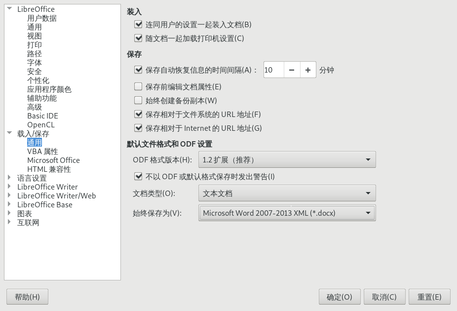
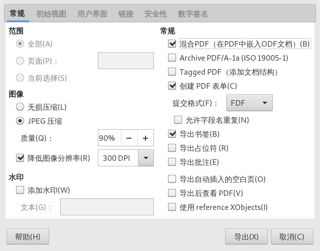
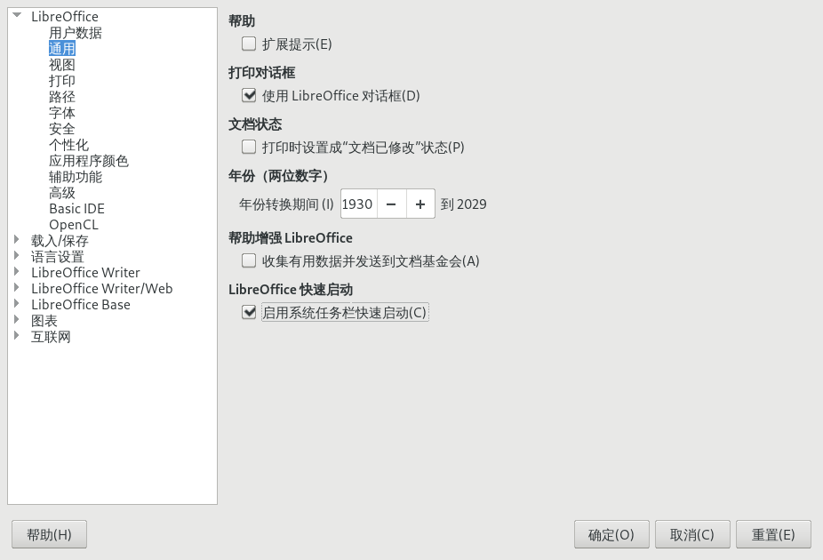
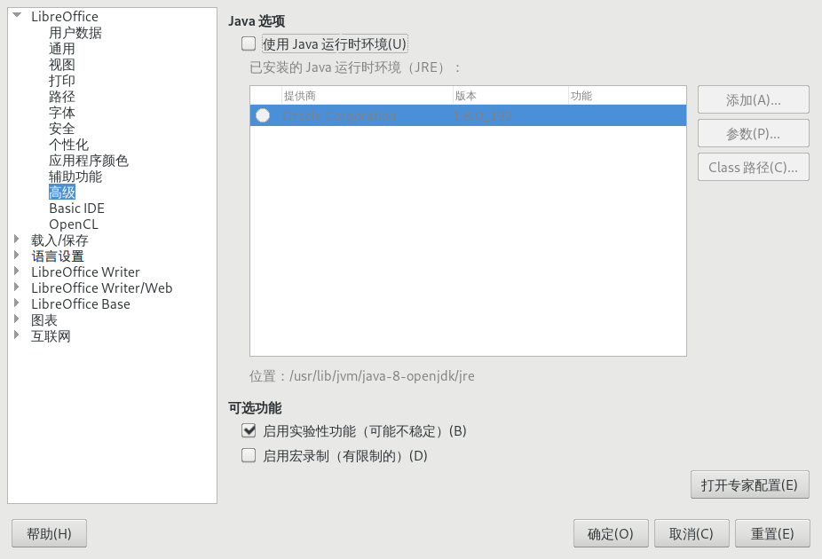

提高libreoffice效率的小窍门
从 https://www.fossmint.com/libreoffice-tips-to-boost-your-productivity/ 看到的，记录一下
Libreoffice的常用快捷键
导航
- Home
- 光标跳转到行首
- End
- 光标跳转到行尾
- Ctrl + Page Up
- 光标跳转到页首
- Ctrl + Page Down
- 光标跳转到页尾
- Ctrl + Home
- 光标跳转到文档开始处
- Ctrl + End
- 光标跳转到文档结尾处
功能键
- F2
- 打开公式工具条
- F3
- 补全自动图文集(AutoText).
- F5
- 打开导航工具
- F7
- 打开拼写和语法检查
- F11
- 打开 "样式与格式" 侧边栏
- Shift + F11
- 创建新样式
格式调整
- Ctrl + E: 段落居中对齐
- Ctrl + J: 段落两段对齐
- Ctrl + L: 段落左对齐
- Ctrl + R: 段落右堆砌
- Ctrl + Shift + P: 将所选内容变成上标/切换到上标输入
- Ctrl + Shift + B: 将所选内容变成下标/切换到下标输入
- Ctrl + Enter: 插入分页符
默认保存为.docx
- 在菜单中选择 "工具" -> "选项"
- 在左边菜单选择 ”载入/保存“ -> "通用".
在 “默认文件格式和ODF设置“ 中将 “始终保存为” 修改为 “Microsoft Word 2017-2013 XML“.

导出混合PDF
混合PDF可以让你用PDF应用查看文档的同时，保留用Libreoffice编辑其内容的能力。
- 在菜单中选择 ”文件“ -> ”导出“
勾选 ”混合PDF（在PDF中嵌入ODF文档）“

提高Libreoffice的速度
启用系统任务栏快速启动
- 选择菜单 "工具" -> "选项"
- 在左边菜单选择 "LibreOffice" -> "通用"
- 勾选 ”启用系统任务栏快速启动“ 
禁用Java运行环境
- 选择菜单 "工具" -> "选项"
- 在左边菜单选择 "LibreOffice" -> "高级"
- 去掉 ”使用Java运行时环境“ 
安装插件
你可以在 这里 为LibreOffice找到许多插件
可以通过菜单 ”工具“ -> "扩展管理器" 来安装(或者直接通过快捷键 "Ctrl-Alt-E" 来打开)